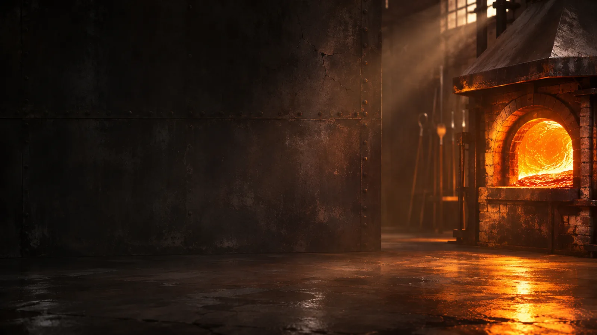
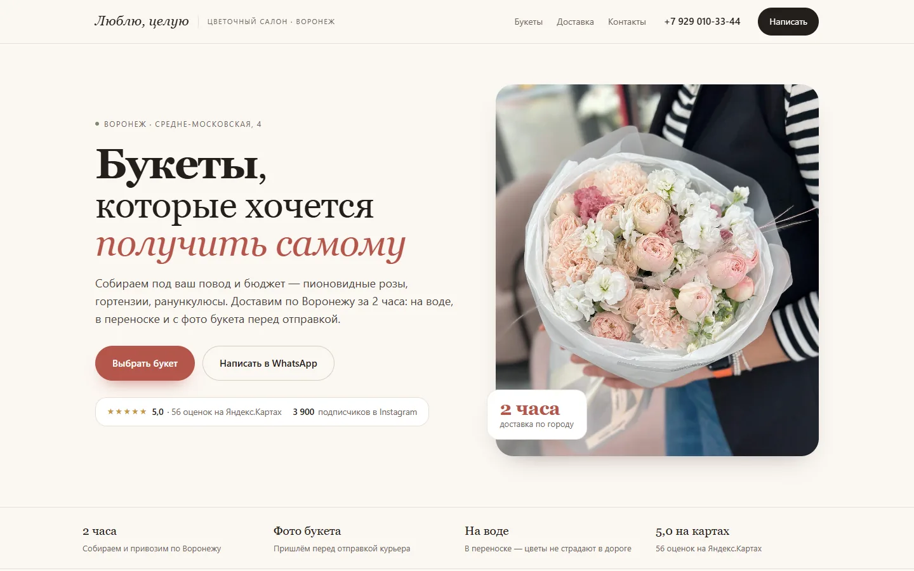
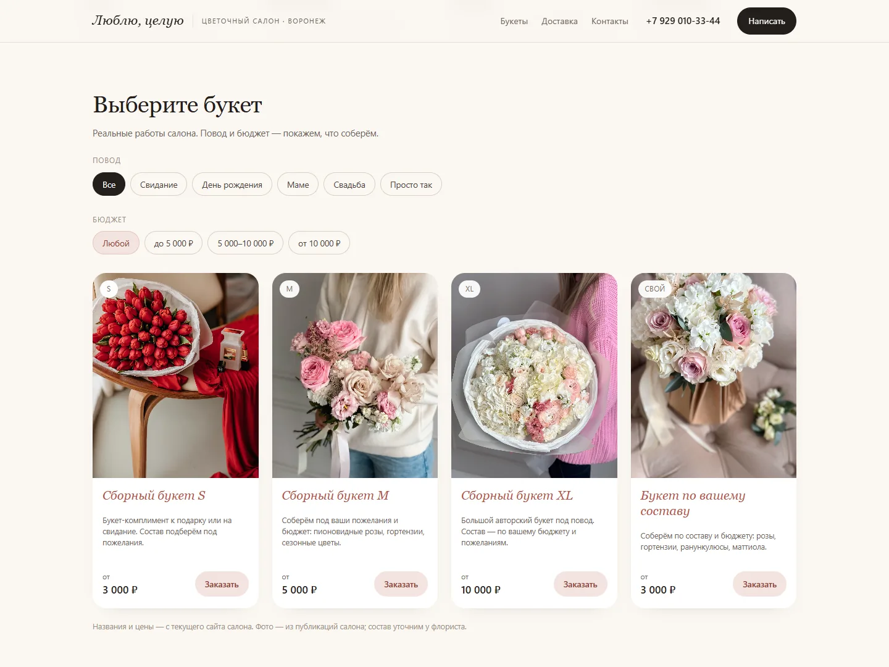
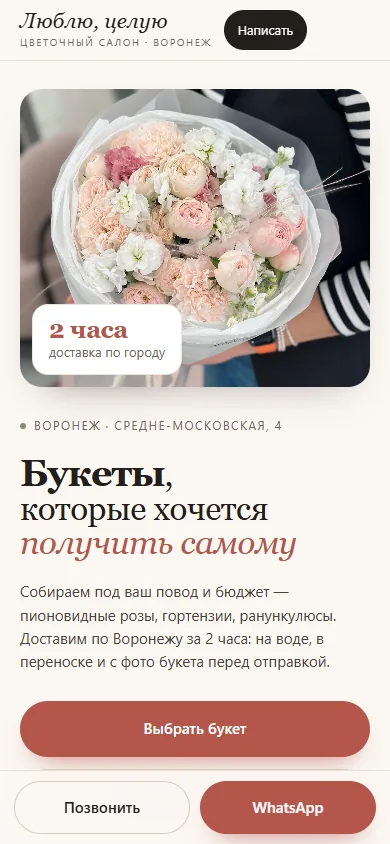
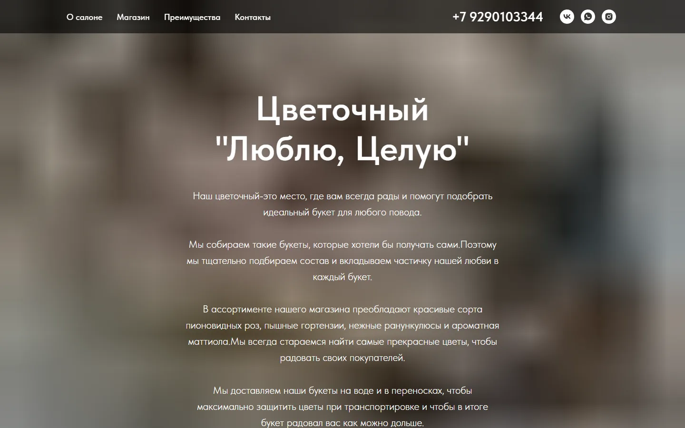

Делаю сайты для небольших бизнесов: цветочный салон, кофейня, мастерская. Воронеж, работаю удалённо по России.
Сайты, которые держат форму
Один подтверждённый кейс · демо-макет, а не сайт клиента



Кейс, который
можно потрогать
«Люблю, целую»: цветочный салон. Демонстрационный макет, а не запущенный сайт клиента: я собрал его как рабочий образец подхода. Слева сайт салона, каким он был. Справа макет: те же букеты и цены, но выбор и заказ в два шага.

Что именно сделано
- Пересобрал структуру под выбор букета: повод, размер, бюджет вместо простыни текста.
- Сделал витрину с ценами S / M / XL и заказ в мессенджере с уже заполненным текстом.
- Проверил мобильную версию, клавиатуру и работу без JavaScript: страница остаётся читаемой.
Макет демонстрационный: я не выдаю его за сайт клиента и не приписываю ему чужих результатов.
Что здесь честно
В портфолио пока один кейс. Не запущенный клиентский сайт, а макет, который можно открыть и потрогать: посмотреть витрину, пройти путь до заказа, проверить вёрстку на телефоне.
Поэтому на странице нет отзывов, логотипов клиентов и цифр конверсии. Когда появятся, они будут здесь, с именами и ссылками.
Печь, форма, отжиг
Один и тот же порядок на любом проекте: сначала понять, что должно получиться, потом собрать форму, потом проверить, что она не треснет на телефоне.
-
Разбор задачи
Смотрю, кто ваш покупатель, что он должен понять за десять секунд и какое действие сделать. Отсюда состав страниц.
-
Форма
Структура и макет: где доказательство, где цена, где кнопка. Согласуем направление до того, как появится код.
-
Сборка
Вёрстка, типографика, движение, мобильная версия. Сайт статический: быстро грузится и не зависит от чужих сервисов.
-
Отжиг
Проверка контраста, клавиатуры, скринридера и разных экранов. После запуска не исчезаю: правки и вопросы на мне.
Что можно заказать
- Сайт-визитка
- Когда нужно объяснить, чем вы занимаетесь, и не потерять человека по дороге к контакту.
- Витрина с выбором
- Когда товар нужно показать лицом, а заказ вы принимаете в мессенджере: цветы, кофе, мебель, услуги.
- Редизайн и разбор
- Когда сайт есть, но с него не пишут. Покажу, где именно теряется человек, и что менять в первую очередь.
Меня зовут Юрий.
Делаю сайты, которые можно проверить.
Работаю один, без агентства и менеджеров: вы общаетесь напрямую со мной, и я же собираю страницу. Мне интересны небольшие дела: цветочный салон, кофейня, мастерская, где сайт нужен не для галочки, а чтобы человек выбрал и написал.
Пока в портфолио один кейс, и это честная стадия: я не подписываю чужие работы своим именем. Следующим в портфолио станет ваш сайт.
Расскажите, чем занимаетесь
Хватит двух-трёх предложений: что за бизнес, что хотите показать и как сейчас принимают заказы. Отвечу в тот же день и скажу, что имеет смысл делать с сайтом.
Если сайт уже есть, пришлите ссылку: посмотрю и скажу, что мешает людям писать вам.